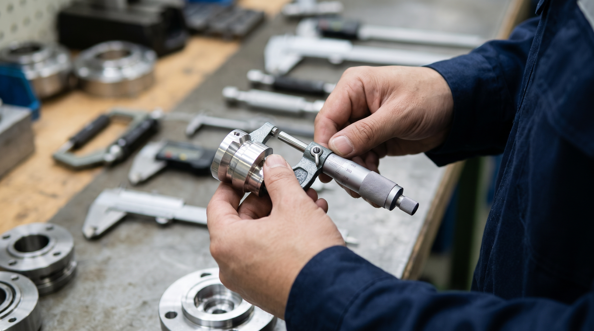
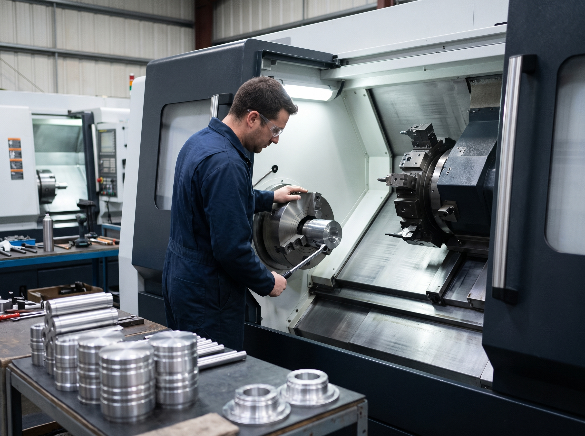
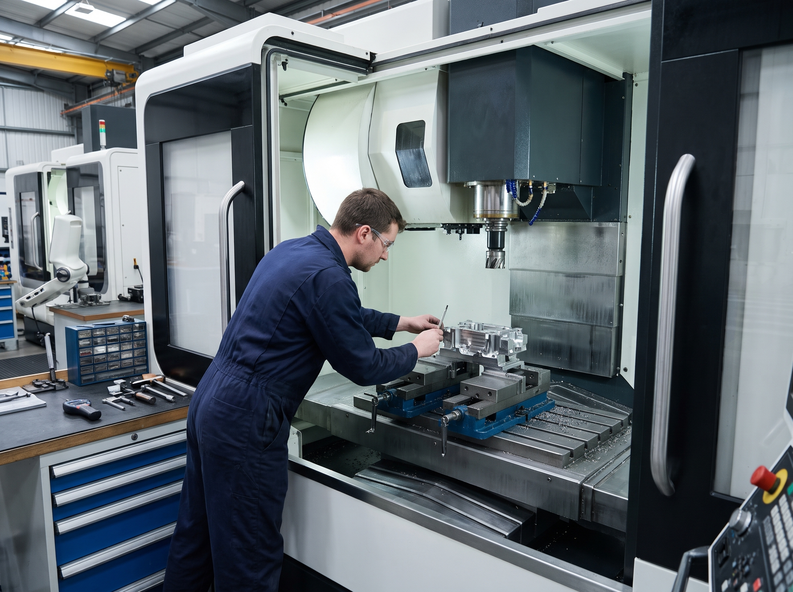
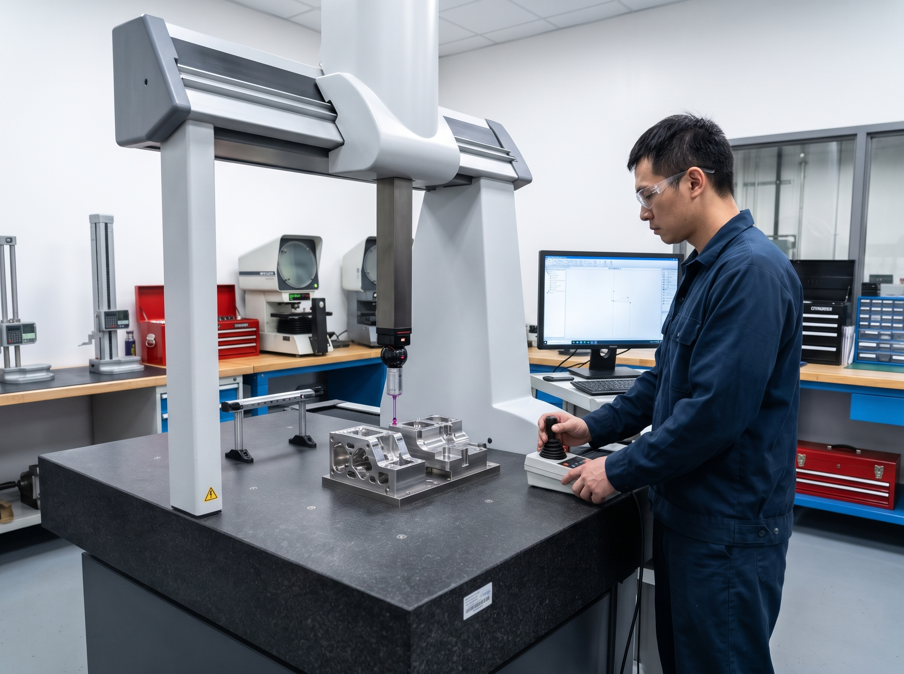
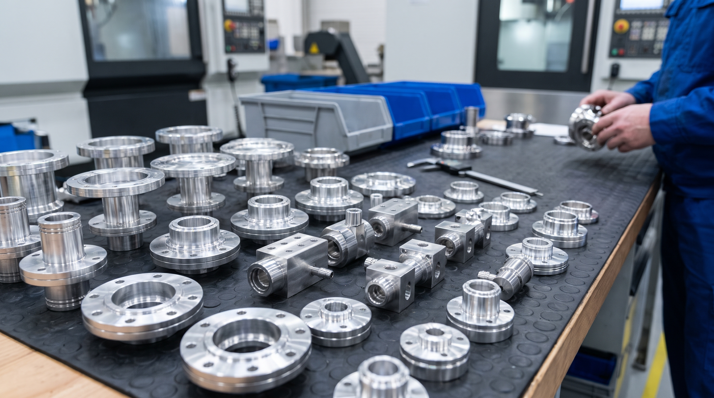
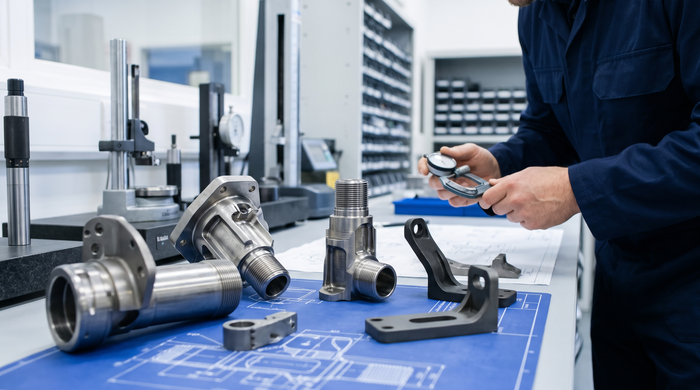
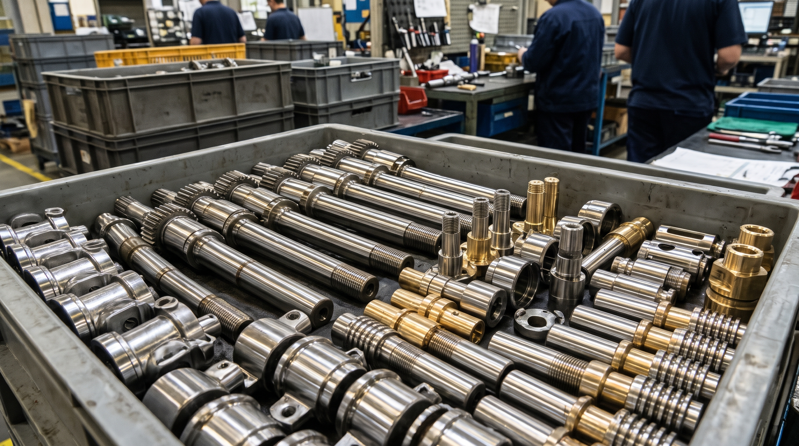
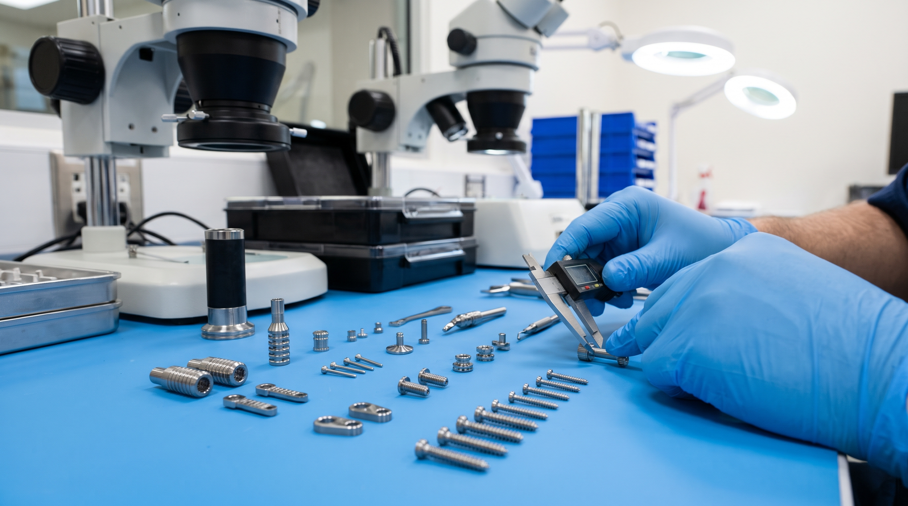
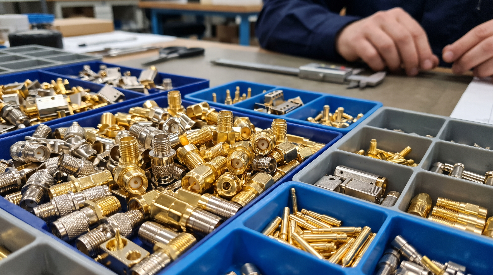
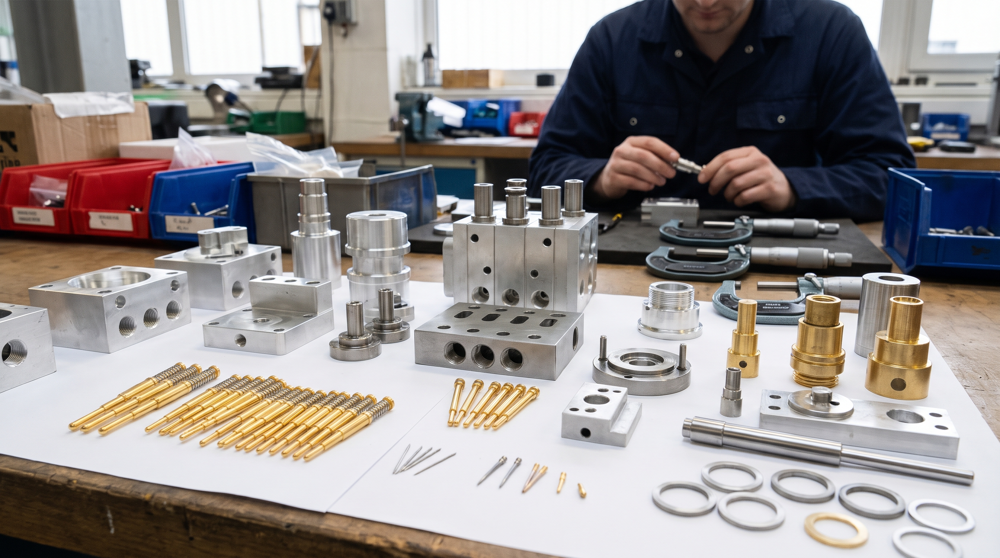

最先端のCNC複合旋盤設備と全方位的な精密検査機器を組み合わせ、試作から量産まで、最も信頼性の高いオーダーメイドの金属部品加工ソリューションを提供します。
オンライン見積り台湾の台南市永康区に拠点を置く上元先進股份有限公司（旧：世構科技）は、専門的な精密部品加工および検査サービスを提供するメーカーです。CNC複合旋盤加工、台湾ローカルでの受託製造、専用治具の設計製造、CNCフライス加工において長年の豊富な経験を有しています。
当社は一流の加工設備と精密測定機器を備え、加工精度を常に向上させる技術チームと品質を厳格に管理する品質保証スタッフを擁しています。完璧なプロセスと最も厳格な基準に基づく管理により、お客様に最高の製品とサービスを提供いたします。

最先端の加工設備と恒温検査室を配置し、すべての製品が厳格な図面公差要件を満たすことを保証します。

複数台の高精度CNC複合旋盤と自動旋盤を保有。ニーズに応じて最大加工外径と長さを柔軟に調整し、旋削、フライス、穴あけ、タップ加工などの複雑な工程を一度のチャッキングで完了させます。

高速切削フライス盤および多軸マシニングセンタを完備。複雑な幾何学的形状の部品開発、金型試作、中量生産に適しており、精細な表面処理と寸法精度を提供します。

精密測定室を設け、CMM三次元測定機、光学投影機、表面粗さ測定機、各種校正測定具を配備。受入検査（IQC）、工程内検査（IPQC）、出荷検査（FQC）を徹底しています。
完璧なSOPプロセスにより、すべてのお客様の製品に対して最も厳密な管理を行い、最高の品質を提供します。
製品の材質、公差、表面処理を詳細に検討し、合理的なオーダーメイドの見積もりを提供します。
CNC加工パスを作成し、最適な刃物と治具を選定。迅速に初回サンプルを提出し確認を得ます。
標準化された作業による量産。現場のQAが定期的に初品検査と巡回検査を行い、安定性を確保します。
全寸法および表面状態の最終検査を実施し、検査成績書を添付。適切に梱包し、納期通りに出荷します。
長年にわたる加工経験を蓄積し、製品はハイテク、重工業、医療、航空宇宙など多様な分野で広く応用されています。

真空チャンバー部品、ウェーハ搬送機械部品、フランジ継手、耐薬品性に優れた各種高精度産業用構造部品の加工。

高強度・耐高温のチタン合金や超合金材料を使用し、複雑な航空宇宙用コネクタや防護アセンブリを図面通り厳密に加工します。

高寿命・耐疲労の安全基準を満たす、各種高耐摩耗ステアリング・トランスミッション部品、シャフト、センサー筐体の旋削加工。

ステンレス鋼やチタン合金などの生体適合材料を微細加工技術で処理し、手術器具、歯科・整形外科用インプラント部品、検査機器に適用します。

高周波・低損失のRF（高周波）コネクタ部品、基地局通信コンポーネント、同軸アダプタを加工し、優れた導電性と信号伝送を確保します。

ロボットアーム周辺部品、空圧機器部品、および生産ライン向けのカスタム設計による高精度な検査治具の専門OEM。